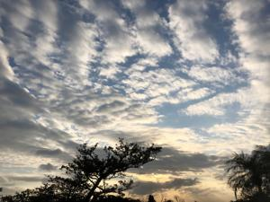

うるがいの話 ある日
最新: 一発で大吉！【うるがいの話 ある日】とは 一日だけのプログです
『うるがいの話』の最新一日だけのプログで、通信料が少なく経済的だ。カニの画像をクリックすると全ての日付が載る『うるがいの話』サイトを表示します
|
|
【うるがいの話】 うるがい(ｳﾙｶﾞｲ urugai)とは、『もずくがに』の名前でとても大きくなります。 |
|---|---|
|
|
【カミマヤーの話】 猫のことを方言でマヤーといいます。カミマヤー（kamimayaa）とは、神の猫のことです。 |
|
【たながぁの音楽】 たながぁ（ﾀﾅｶﾞｰ tanagaa）とは手長えびのことで、何種類かあり大きいのは車 エビぐらいになります。 |

|
【ぶながぁの話】 ぶながぁ(ﾌﾞﾅｶﾞｰ bunagaa)とは、赤い髪の毛、赤い身体、そして身長は１ｍ２０ｃｍ ぐらい、川の蟹を食べているの目撃された。場所は沖縄県国頭郡大宜味村のと ある村僕の隣近所に住んでいる爺さんから、聞いた話です。 |
|
|
【ギーマの話】 ギーマ(giima)とは、山原の里山に咲くスズランに似た、 花を付けます。実は食べられます、 気が付くと口の周りが紫になっています。 |
2023年01月05日 (木）一発で大吉！
16:12

世の中の現役の人達が、仕事をしている時に暇人は人混みを避けた日を選び参
拝に行く。ところが、同じ境遇の人達も多々いるようで縁起物を売るところで
は行列が出来ていた。並ぶつもりははなからないので、並ばないで済む場所で
買った。そこにあった５０円のおみくじを引くと、大吉だった。一発は、久し
ぶりの気がする。大みそかに故障した食器洗い乾燥機を買いにエディオンへ行
く、事前にネットで調べていた機種はあった、が、事前に準備していた年賀状
の下１桁（５％引き）の適用対象とのこと（残念）。店員さんと設置の日取り
を決めようとしたら、自分でもできますよと言われた。設置作業を頼むなら４
千４百円かかるという。一瞬躊躇したが、無収入なので自分でやることにした
そして、かなり苦労したものの（意外と簡単ではなかった）試運転は無事終え
た。電子レンジは修理に出すつもりだったが、電話で確認すると修理に一ヶ月
かかるかもしれませんと言われ、数日前に試しに使えるかと使ってみると特に
問題なく使えたので、そのまま使っている。徐々に日常の生活に戻ってきてい
る。
１６時０９分 ビットコインの総資産 ￥６、４５２（↑６４）